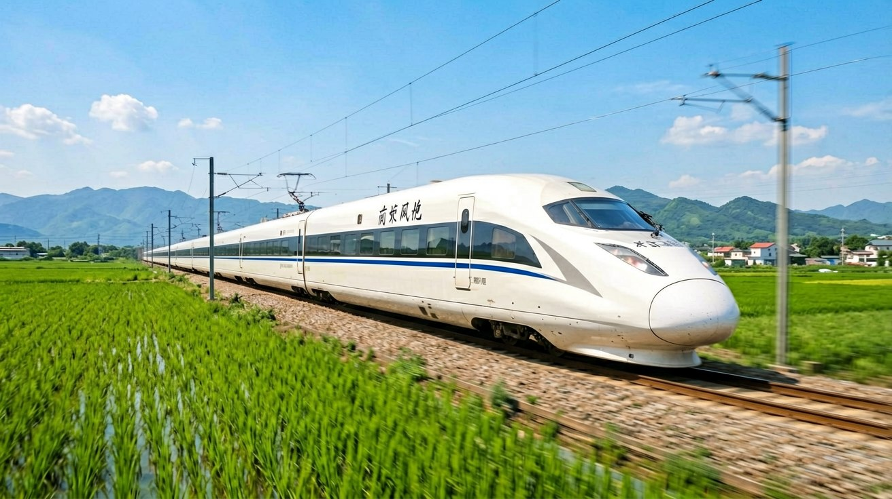
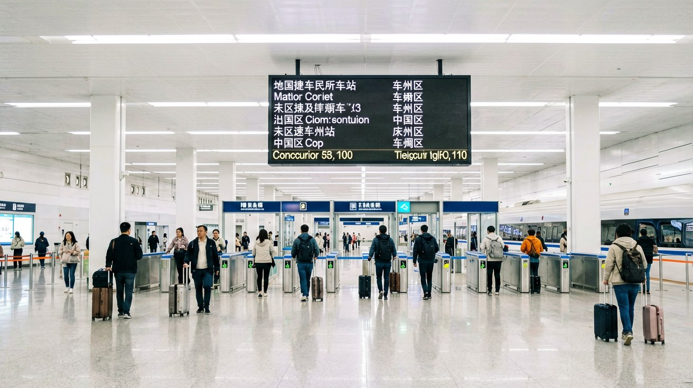
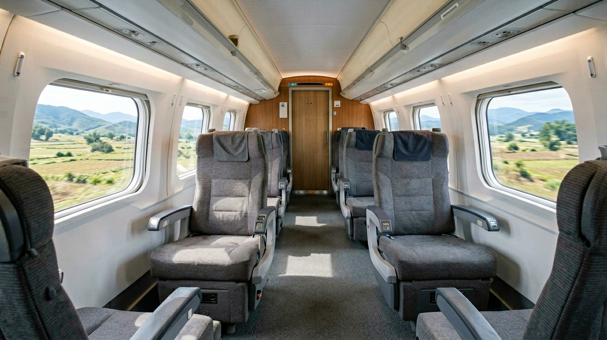
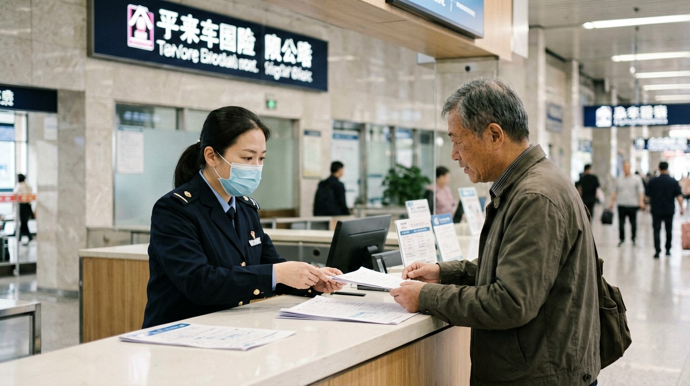

Last updated: June 2026.
You have probably heard that China has the world's largest high-speed rail network, but the question that matters when you are planning a trip is simpler: can you, as a passport holder, actually get on one of these trains without a Chinese ID card, a local phone number, or someone to help you at every step? The answer is yes — and by the end of this article you will know exactly how to buy a ticket, find your platform, board the right carriage, and handle changes or refunds if your plans shift.

China's high-speed rail network connects nearly every provincial capital and major city. Trains operate at speeds of up to 350 km/h, which means a journey like Beijing to Shanghai — roughly 1,300 kilometres — takes between 4.5 and 6 hours. Unlike airports, which are often 40 to 50 kilometres outside the city centre, high-speed rail stations sit right in the urban core. Walk out of the arrival hall and you are at a metro entrance or a taxi stand within minutes.
You will encounter three main train categories. G-series trains are the fastest, cruising at up to 350 km/h and serving long-distance trunk routes. D-series trains run at up to 250 km/h and often cover mid-range or slightly less direct routes. C-series trains are inter-city services operating at up to 200 km/h, typically connecting neighbouring cities like Beijing and Tianjin or Guangzhou and Shenzhen. The category letter appears in the train number on your ticket and on all departure boards, so you can tell at a glance what kind of service you are booking.
Punctuality is one of the system's strongest selling points. Most high-speed trains depart and arrive precisely on schedule, and they are far less affected by weather than flights. Snow, rain, or fog rarely cause delays of more than a few minutes. For any trip under roughly 1,200 kilometres, high-speed rail is almost always faster door-to-door than flying once you factor in airport transfers, security queues, and boarding time.
Your passport is the only document you need to buy and board a high-speed train. There is no requirement for a Chinese ID card, a residence permit, or a local phone number. You have three main channels, and which one you pick depends on how far ahead you are booking and how comfortable you are navigating Chinese-language interfaces.
Option 1: 12306.cn English website or app. This is the official ticketing platform run by China Railway. The English version at 12306.cn/en lets you search routes, check schedules, and buy tickets entirely in English. To use it, you register an account with your passport details. After registration, your identity must be verified — the first time this can take up to three to five working days, so do not leave it until the night before. Once verified, you can book tickets for any route. Ticket sales open at 5:00 a.m. Beijing time and close at 1:00 a.m. the next morning, except on Tuesdays when the window closes at 23:30 for system maintenance. The presale period is 15 days, meaning tickets for a given date become available 15 days before departure.
The 12306 app also supports facial verification, which — once completed — allows you to manage tickets purchased through other channels, such as station counters, directly from your phone. Payment on 12306 accepts international credit cards and Alipay in most cases, though success rates vary by issuing bank.
Option 2: Trip.com. If the 12306 registration process sounds like more friction than you want, Trip.com is a third-party travel platform designed with international travellers in mind. It connects to China Railway's ticketing system and presents the same trains and seat inventory in a cleaner, English-native interface. You pay a small service fee per ticket — typically a few US dollars — and in exchange you get instant booking without the identity-verification waiting period. Trip.com handles document validation on its side, and you receive an e-ticket confirmation by email. If your train is cancelled or your schedule changes, the platform processes refunds automatically.
Option 3: Station ticket windows. You can walk up to a ticket counter at any major railway station and buy a ticket with your passport. This works well for same-day travel or routes where you are flexible on timing, but it is risky for popular long-distance routes during peak seasons — trains on the busiest corridors often sell out days in advance. If you go this route, have the destination city name written in Chinese characters to show the clerk, as English proficiency at station counters varies widely.
Every high-speed train offers two or three seat classes. Second class is the standard option: three seats on one side of the aisle, two on the other, with adequate legroom and a fold-down tray table. First class gives you a wider seat in a two-plus-two layout, more legroom, and a quieter carriage. Business class is the top tier on G-series trains, with fully reclining seats in a two-plus-one or one-plus-one layout, a complimentary meal and drink service, and dedicated lounge access at major stations. For a 5-hour journey like Beijing–Shanghai, business class can be worth the splurge; for a 1-hour hop like Shanghai–Hangzhou, second class is perfectly comfortable.

Arrive at the station at least 45 minutes before departure if it is your first time, and 30 minutes once you are familiar with the layout. Chinese high-speed rail stations are large, well-signposted in both Chinese and English, and follow a consistent flow that is easy to learn.
First, you pass through a security check at the station entrance. This is similar to airport security but faster: place your bags on the conveyor belt, walk through the metal detector, and collect your belongings on the other side. There is no need to remove shoes or belt, and liquids in reasonable quantities are generally allowed through — though flammable or corrosive substances are prohibited. A full list of banned items is posted at every station entrance in English.
Once inside, look up at the large departure board. Find your train number — it starts with G, D, or C followed by digits — and note two things: the boarding gate number and the status. If the status says "check-in," you can proceed to the gate area. High-speed rail stations use e-tickets. Your ticket is linked to your passport, so there is no paper ticket to collect unless you specifically request a reimbursement receipt at a counter. At the boarding gate, you line up at a manual channel — the automatic gates read Chinese ID cards, so passport holders must go through the staffed lane. A station attendant scans your passport, verifies your booking, and lets you through to the platform.
On the platform, train carriage numbers are marked on overhead signs or on the platform floor. Match the carriage number printed on your booking confirmation. Carriages are numbered sequentially, and each has a clear digital display next to the door showing the carriage number and train number. Board your carriage, find your seat — seat numbers follow a row-and-letter system, with A and F always by the window — and stow your luggage.

Once you are seated, the onboard experience is straightforward and comfortable. Each seat has a fold-down tray table, a power socket (standard Chinese two-pin and three-pin outlets, located under the seat or between seats), and a small net pocket on the seatback in front of you for a water bottle or book. Wi-Fi is available on most G-series trains — connect to the "Railway-WiFi" network and follow the on-screen instructions, which are available in English. The connection is stable enough for messaging and browsing, though not for streaming high-definition video.
Luggage rules are simple. Each adult passenger can bring up to 20 kilograms of luggage, and the sum of the three dimensions of any single item must not exceed 130 centimetres — roughly the size of a medium checked suitcase. This is self-regulated at most stations; there is no weigh-in at the gate, but if your luggage blocks the aisle or cannot fit in the overhead rack, the train attendant will ask you to move it. Stow large suitcases on the luggage racks at the end of each carriage or in the space behind the last row of seats. Smaller bags go on the overhead shelf above your seat.
Food options vary by train and route. A dining car serves hot meals, snacks, and drinks. On longer G-series routes, you can also order food delivery to your seat by scanning a QR code on the armrest or tray table — the menu includes rice dishes, noodle bowls, and bottled beverages. You can bring your own food and non-alcoholic drinks onto the train as well. Each carriage has a Western-style toilet and a squat toilet at either end, plus a washbasin area with soap and paper towels. Toilets are cleaned regularly during the journey.
Children travel under a clear fare structure. Children under 6 years old ride free when sharing a seat with an adult. Children aged 6 to 13 require a child ticket at a reduced fare. Anyone 14 or older pays the full adult price. If you want a separate seat for a child under 6, you can purchase a child ticket for that purpose.

Plans change, and China Railway's ticket-change and refund policies are structured around how far in advance you act. Understanding the fee tiers before you book can save you money and frustration.
Changing your ticket. You can change the date, train number, or seat class of an existing booking once. You cannot change the departure or arrival station, except between stations in the same city — Beijing has multiple high-speed rail stations, for example, and you may be able to switch between them depending on availability. Changes made more than 48 hours before departure are free of charge. Changes made 24 to 48 hours before departure to a train departing on the same calendar day are also free. However, if you change to a later-date train 24 to 48 hours before departure, you pay 5% of the lower ticket fare. Changes made less than 24 hours before departure to a later-date train incur a 15% fee. If you miss your train and change to a next-day or later service, the fee rises to 40% of the lower fare. Changes are processed through the same channel you used to book — 12306, Trip.com, or the station counter.
Refunding your ticket. Refund fees follow a similar tiered structure based on when you cancel. More than 8 days before departure, refunds are free. Between 48 hours and 8 days before departure, the fee is 5% of the ticket price. Between 24 and 48 hours before departure, the fee is 10%. Less than 24 hours before departure, the fee is 20%. Refunds are credited back to the original payment method; processing times vary by platform, with 12306 typically taking three to seven working days and Trip.com often faster.
Prohibited items. A few categories of items will get you stopped at security or removed from the train. Flammable liquids, gas canisters, fireworks, and corrosive chemicals are banned outright. Sharp objects over a certain length — including large knives and tools — are prohibited. Hairspray, insecticide, and similar aerosol products are limited to 120 millilitres per container. Power banks are allowed but must be carried in your hand luggage, not in checked-style large bags, and individual units must not exceed 100 watt-hours. If you are unsure about an item, check the posted list at the station entrance or leave it behind.
A few final tips. Download your e-ticket confirmation as a screenshot before heading to the station — mobile data can be spotty inside large station buildings. Write down your train number and departure time on a piece of paper or in a notes app; if your phone battery dies, you still know where to go. And if you are travelling during Chinese public holidays — particularly the Spring Festival travel rush in late January or early February — book the moment tickets become available 15 days ahead. Trains on major corridors sell out within minutes during peak periods.
This article is based on information as of June 2026.
Sources
Policies, fares, and train schedules may change. Verify the latest information before your trip.